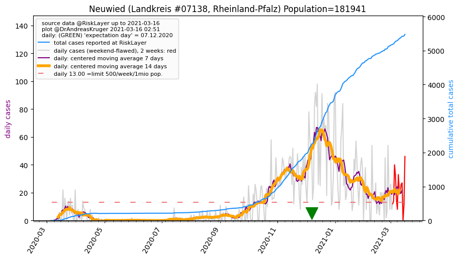
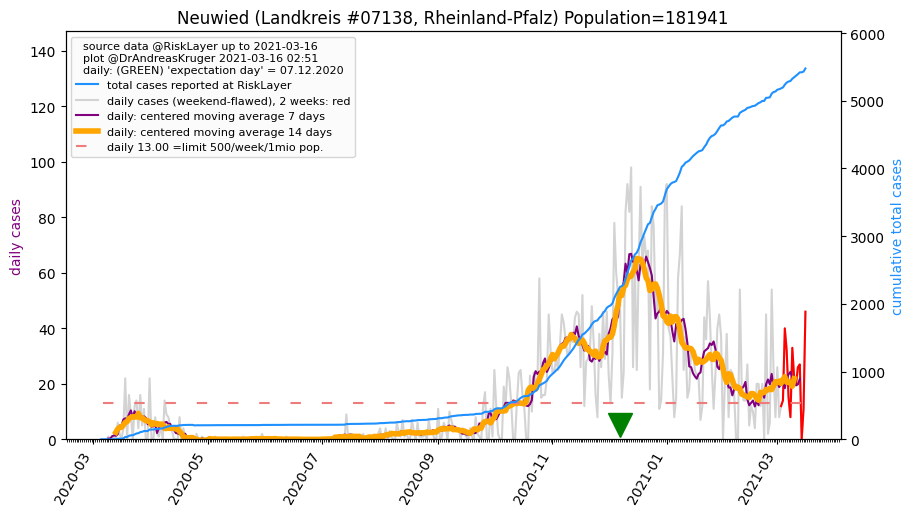

")
")
")

")
")
")
_LK (36.0 km)")
")
")
")
")
")
")
| Rhein-Sieg-Kreis_KR (0.0 km) |
Bonn_KS (10.7 km) |
Köln_KS (27.6 km) |
Neuwied_LK (28.0 km)  |
| Rheinisch-Bergischer Kreis_KR (29.3 km) |
Oberbergischer Kreis_KR (34.4 km) |
Ahrweiler_LK (35.3 km) |
Altenkirchen (Westerwald)_LK (36.0 km) |
| Leverkusen_KS (36.0 km) |
Rhein-Erft-Kreis_KR (39.9 km) |
Solingen_KS (46.2 km) |
Remscheid_KS (47.0 km) |
| Mayen-Koblenz_LK (48.2 km) |
Euskirchen_KR (48.6 km) |
Beware that this is a temporary and experimental page - it might get removed, so please do not link to it. Instead link to project http://tiny.cc/cov19de.